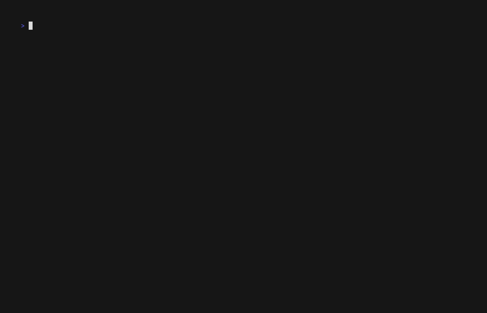

Backup System Guide¶
Version: v5.14.0 (Teaching Workflow v3.0) Last Updated: 2026-01-21
Overview¶

Demo: Automated backup system with retention policies and teach status integration
Teaching Workflow v3.0 introduces an automated backup system that creates timestamped snapshots of your teaching content, helping you recover from accidental deletions, unwanted changes, or experiment safely.
Key Features¶
- ✅ Automatic backups - Created on every content modification
- ✅ Timestamped snapshots - Easy to identify and restore
- ✅ Retention policies - Configure what to keep vs delete
- ✅ Safe deletion - Confirmation prompts prevent accidents
- ✅ Archive management - Clean up at semester end
- ✅ Storage efficient - Incremental backups, minimal overhead
Table of Contents¶
- How It Works
- Backup Structure
- Retention Policies
- Creating Backups
- Viewing Backups
- Restoring Content
- Deleting Backups
- Archive Management
- Configuration
- Best Practices
- Troubleshooting
How It Works¶
Automatic Backup Triggers¶
Backups are automatically created when:
- Scholar generates content
teach exam "Midterm" # Creates backup before saving
teach lecture "Topic" # Creates backup before saving
- Manual content modification (if using backup helpers)
- Before deletion (if using delete helpers)
What Gets Backed Up¶
- Full content - Entire file/folder contents
- Metadata preserved - Timestamps, permissions
- YAML frontmatter - All configuration
- Embedded resources - Images, data files
What's NOT Backed Up¶
.backups/folders themselves (prevents recursion).git/folders (use git for version control)- Temporary files (
.tmp,.swp, etc.) - Build artifacts (
_site/,.quarto/)
Command Reference¶
teach backup create¶
Creates a timestamped backup of content.
teach backup create lectures/week-01 # Auto timestamp
teach backup create exams/midterm # Backup exam
teach backup create . # Backup all
```text
### teach backup list
Lists all backups for content.
```bash
teach backup list # List all
teach backup list lectures/week-01 # List specific
teach backup list --recent 5 # Show 5 most recent
```text
### teach backup restore
Restores content from a backup.
```bash
teach backup restore lectures.2026-01-20-1430
teach backup restore lectures.2026-01-20-1430 --force # Skip confirmation
teach backup restore lectures.2026-01-20-1430 --dry-run # Preview only
```text
### teach backup delete
Permanently deletes a backup.
```bash
teach backup delete old-backup
teach backup delete old-backup --force # Skip confirmation
```text
### teach backup archive
Archives semester backups based on retention policies.
```bash
teach backup archive spring-2026
teach backup archive spring-2026 --compress # Create .tar.gz
```text
---
## Backup Structure
### Location
Backups are stored in `.backups/` folders alongside the content:
```text
lectures/
├── week-01-intro.qmd
├── week-02-regression.qmd
├── week-03-inference.qmd
└── .backups/
├── week-01-intro.2026-01-18-1430/
├── week-01-intro.2026-01-17-0915/
├── week-02-regression.2026-01-18-1045/
└── week-03-inference.2026-01-18-1345/
```text
### Timestamp Format
```text
<content-name>.<YYYY-MM-DD-HHMM>/
```diff
Examples:
- `midterm.2026-01-18-1430/` - Created Jan 18, 2026 at 2:30 PM
- `homework-03.2026-01-15-0915/` - Created Jan 15, 2026 at 9:15 AM
### Full Example
```text
exams/
├── midterm.qmd # Current version
└── .backups/
├── midterm.2026-01-18-1430/ # Today, after final edits
│ └── midterm.qmd
├── midterm.2026-01-17-0915/ # Yesterday, before review
│ └── midterm.qmd
└── midterm.2026-01-15-1620/ # Last week, initial version
└── midterm.qmd
```yaml
---
## Retention Policies
### Policy Types
Two retention policies control what happens at semester end:
| Policy | Behavior | Use Case |
|--------|----------|----------|
| `archive` | Keep forever, move to `.flow/archives/` | Exams, important assessments, syllabi |
| `semester` | Delete after confirmation | Lecture drafts, practice problems |
### Default Policies
```yaml
# .flow/teach-config.yml
backups:
retention:
assessments: archive # Exams, quizzes keep forever
lectures: semester # Lectures deleted at semester end
syllabi: archive # Syllabi keep forever
```yaml
### Content Type Mapping
| Content | Default Policy | Rationale |
|---------|----------------|-----------|
| `exam`, `quiz` | `archive` | Legal requirements, reuse next year |
| `assignment` | `archive` | Grading disputes, accreditation |
| `syllabus` | `archive` | Official course documents |
| `rubric` | `archive` | Grading consistency |
| `lecture` | `semester` | Revised frequently, large files |
| `slides` | `semester` | Generated from lectures |
### Custom Policies
Override defaults per content type:
```yaml
backups:
retention:
# Keep everything (safest)
assessments: archive
lectures: archive # Changed from semester
syllabi: archive
```yaml
Or be more aggressive:
```yaml
backups:
retention:
# Minimal retention (disk space constrained)
assessments: archive # Only exams kept
lectures: semester # All others deleted
syllabi: semester # Changed from archive
```bash
---
## Creating Backups
### Automatic Creation
Most commands automatically create backups:
```bash
# Scholar commands
teach exam "Midterm" # Backup created automatically
teach lecture "Topic" # Backup created automatically
teach assignment "HW3" # Backup created automatically
```bash
### Manual Creation
For advanced users, manual backup functions:
```bash
# Backup a specific file/folder
_teach_backup_content lectures/week-05.qmd
# Returns path to backup
# /path/to/lectures/.backups/week-05.2026-01-18-1430
```text
### Backup Confirmation
After creating content, you'll see:
```text
✓ Content created: lectures/week-05-regression.qmd
✓ Backup created: lectures/.backups/week-05-regression.2026-01-18-1430/
```text
---
## Viewing Backups
### Via Status Command
```bash
teach status
```text
Output:
```text
Backup Summary:
Total backups: 12 across all content
Last backup: 2026-01-18 10:15 (4 hours ago)
By content type:
• Exams: 3 backups (4.2 MB)
• Lectures: 5 backups (8.1 MB)
• Assignments: 4 backups (2.3 MB)
```bash
### Via Filesystem
```bash
# List all backups
find . -type d -name ".backups" -exec ls -lh {} \;
# Count backups
find . -type d -name ".backups" | wc -l
# Find specific content backups
ls -lht lectures/.backups/
```bash
### Advanced: List Function
```bash
# List backups for specific content
_teach_list_backups lectures/week-05.qmd
# Output (newest first):
# lectures/.backups/week-05.2026-01-18-1430
# lectures/.backups/week-05.2026-01-17-0915
# lectures/.backups/week-05.2026-01-15-1620
```bash
### Check Backup Size
```bash
# Total backup size for content
_teach_backup_size lectures/week-05.qmd
# Output: 1.2M
```bash
### Count Backups
```bash
# Number of backups for content
_teach_count_backups lectures/week-05.qmd
# Output: 3
```bash
---
## Restoring Content
### Quick Restore (Copy)
```bash
# 1. List available backups
ls -lt lectures/.backups/
# 2. Identify backup to restore
# Example: week-05.2026-01-17-0915 (before bad edit)
# 3. Copy content back
cp -R lectures/.backups/week-05.2026-01-17-0915/week-05.qmd \
lectures/week-05.qmd
```bash
### Restore with Backup
```bash
# 1. Backup current version first (safety)
_teach_backup_content lectures/week-05.qmd
# 2. Restore older version
cp -R lectures/.backups/week-05.2026-01-17-0915/week-05.qmd \
lectures/week-05.qmd
# 3. Verify
cat lectures/week-05.qmd | head -20
```bash
### Compare Versions
```bash
# Compare current with backup
diff lectures/week-05.qmd \
lectures/.backups/week-05.2026-01-17-0915/week-05.qmd
# Or with better formatting
diff -u lectures/week-05.qmd \
lectures/.backups/week-05.2026-01-17-0915/week-05.qmd | less
```bash
### Partial Restore
```bash
# Restore only specific section
# 1. View backup
cat lectures/.backups/week-05.2026-01-17-0915/week-05.qmd
# 2. Extract needed section
awk '/^## Section 2/,/^## Section 3/' \
lectures/.backups/week-05.2026-01-17-0915/week-05.qmd > section2.md
# 3. Manually merge into current file
```bash
### Using Git (Alternative)
If content is committed:
```bash
# View history
git log --oneline lectures/week-05.qmd
# Compare versions
git show <commit-hash>:lectures/week-05.qmd
# Restore from git
git checkout <commit-hash> -- lectures/week-05.qmd
```bash
---
## Deleting Backups
### Safe Delete (Recommended)
Prompts for confirmation:
```bash
# Delete will show preview
_teach_delete_backup lectures/.backups/week-05.2026-01-15-1620
# Output:
# ⚠ Delete Backup?
# ────────────────────────────────────────────────
# Path: lectures/.backups/week-05.2026-01-15-1620
# Name: week-05.2026-01-15-1620
# Size: 1.2M
# Files: 15
#
# ⚠ This action cannot be undone!
#
# Delete this backup? [y/N]
```text
### Force Delete (Scripts)
Skip confirmation for automation:
```bash
_teach_delete_backup lectures/.backups/week-05.2026-01-15-1620 --force
```bash
### Delete All Old Backups
```bash
# Delete backups older than 30 days
find . -type d -name "*.2025-*" -path "*/.backups/*" -exec rm -rf {} \;
# Delete all backups for specific content
rm -rf lectures/.backups/week-05.*
```bash
### Preview Cleanup
Before deleting, see what would be removed:
```bash
_teach_preview_cleanup lectures/week-05.qmd exam
# Output:
# Cleanup Preview
# ────────────────────────────────────────────────
# Content: week-05.qmd
# Type: exam
# Policy: archive
#
# ✓ All 3 backups will be archived
```text
---
## Archive Management
### Semester-End Archive
At end of semester:
```bash
teach archive "Spring 2025"
```text
**Process:**
1. **Scans all content** for `.backups/` folders
2. **Applies retention policies:**
- `archive` - Moves to `.flow/archives/Spring-2025/`
- `semester` - Prompts for deletion
3. **Generates summary**
**Output:**
```text
✓ Archive complete: .flow/archives/Spring-2025
Archived: 8 content folders
• exam-midterm-backups
• exam-final-backups
• assignment-hw1-backups
• assignment-hw2-backups
• assignment-hw3-backups
• syllabus-backups
• rubric-midterm-backups
• rubric-final-backups
Deleted: 5 content folders (semester retention)
• lecture-week01-backups
• lecture-week02-backups
• lecture-week03-backups
• slides-week01-backups
• slides-week02-backups
```text
### Archive Structure
```text
.flow/
└── archives/
├── Spring-2025/
│ ├── exam-midterm-backups/
│ │ ├── midterm.2025-03-01-1430/
│ │ └── midterm.2025-02-28-0915/
│ ├── exam-final-backups/
│ └── syllabus-backups/
└── Fall-2024/
└── ...
```bash
### Archive Queries
```bash
# List all archives
ls -lh .flow/archives/
# View specific archive
ls -lh .flow/archives/Spring-2025/
# Archive size
du -sh .flow/archives/Spring-2025/
# Total archive size
du -sh .flow/archives/
```bash
### Restore from Archive
```bash
# Copy archived backup back
cp -R .flow/archives/Spring-2025/exam-midterm-backups/ \
exams/.backups/
```yaml
---
## Configuration
### Default Configuration
```yaml
# .flow/teach-config.yml
backups:
enabled: true
retention:
assessments: archive
lectures: semester
syllabi: archive
archive_dir: .flow/archives
```yaml
### Disable Backups (Not Recommended)
```yaml
backups:
enabled: false
```yaml
⚠️ **Warning:** Disabling backups removes safety net. Use git instead.
### Custom Archive Location
```yaml
backups:
archive_dir: ../course-archives # Outside project
```yaml
Or:
```yaml
backups:
archive_dir: /Volumes/Backup/teaching/archives # External drive
```yaml
### Per-Project Configuration
Override defaults in project's `.flow/teach-config.yml`:
```yaml
# Course with limited disk space
backups:
retention:
assessments: archive # Keep only exams
lectures: semester # Delete everything else
syllabi: semester
```bash
---
## Best Practices
### 1. Regular Status Checks
```bash
# Weekly backup health check
teach status
# Look for:
# - Last backup timestamp (should be recent)
# - Total backup count (should grow over semester)
# - Backup sizes (watch for excessive growth)
```bash
### 2. Archive Every Semester
```bash
# At semester end
teach archive "Spring 2025"
# Verify archive
ls -lh .flow/archives/Spring-2025/
du -sh .flow/archives/Spring-2025/
```bash
### 3. Don't Rely on Backups Alone
Backups complement git, not replace:
```bash
# Use both
g commit "feat: add Week 5 lecture" # Git version control
teach lecture "Week 6" # Automatic backup
# Result:
# - Git history for large-scale recovery
# - Backups for quick restoration
```bash
### 4. Clean Up Periodically
```bash
# Mid-semester cleanup (optional)
# Delete very old backups if disk space tight
# Keep last 5 backups per file
for backup_dir in */.backups/*; do
keep_count=5
delete_count=$(($(ls -1 $backup_dir | wc -l) - keep_count))
if (( delete_count > 0 )); then
ls -1t $backup_dir | tail -n $delete_count | \
xargs -I {} rm -rf "$backup_dir/{}"
fi
done
```bash
### 5. Backup Configuration
```bash
# Keep configuration backed up
cp .flow/teach-config.yml .flow/teach-config.yml.backup
# Or commit to git
g add .flow/teach-config.yml
g commit "docs: update backup retention policies"
```bash
### 6. Test Restores
```bash
# Periodically test restore process
# 1. Make backup
teach lecture "Test"
# 2. Modify content
echo "test change" >> lectures/test.qmd
# 3. Restore
cp lectures/.backups/test.LATEST/test.qmd lectures/test.qmd
# 4. Verify original content restored
```text
---
## Troubleshooting
### Backups Not Created
**Check if backups enabled:**
```bash
yq '.backups.enabled // true' .flow/teach-config.yml
```text
**Verify Scholar integration:**
```bash
teach doctor
```bash
**Manual backup test:**
```bash
_teach_backup_content lectures/test.qmd
ls -lht lectures/.backups/
```bash
### Can't Restore Backup
**Check permissions:**
```bash
ls -ld lectures/.backups/
ls -lh lectures/.backups/week-05.TIMESTAMP/
```bash
**Fix permissions:**
```bash
chmod -R u+rw lectures/.backups/
```bash
**Verify backup integrity:**
```bash
# Check if files exist
ls -lh lectures/.backups/week-05.TIMESTAMP/
# Check file contents
cat lectures/.backups/week-05.TIMESTAMP/week-05.qmd | head
```text
### Excessive Backup Size
**Check sizes:**
```bash
teach status # View backup summary
du -sh */.backups/
```bash
**Identify large backups:**
```bash
du -sh */.backups/* | sort -hr | head -10
```bash
**Solutions:**
1. **Archive old semester:**
```bash
teach archive "Fall 2024"
```
1. **Delete very old backups:**
```bash
find . -type d -name "*.2024-*" -path "*/.backups/*" -exec rm -rf {} \;
```
2. **Change retention policy:**
```yaml
backups:
retention:
lectures: semester # Delete at semester end
```
### Archive Fails
**Check disk space:**
```bash
df -h .
```bash
**Check permissions:**
```bash
ls -ld .flow/
mkdir -p .flow/archives # Ensure exists
```bash
**Manual archive:**
```bash
# Create archive directory
mkdir -p .flow/archives/Spring-2025
# Move backups manually
mv exams/.backups .flow/archives/Spring-2025/exam-backups
```bash
### Lost Backup Metadata
**Find all backups:**
```bash
find . -type d -name ".backups"
```bash
**Reconstruct from timestamps:**
```bash
# List by modification time
ls -lt lectures/.backups/
# Rename if needed
mv lectures/.backups/broken-name \
lectures/.backups/week-05.$(date +%Y-%m-%d-%H%M)
```bash
---
## Advanced Usage
### Backup Scripts
**Weekly backup report:**
```bash
#!/usr/bin/env zsh
# backup-report.sh
echo "📦 Backup Report - $(date +%Y-%m-%d)"
echo ""
# Total backups
total=$(find . -type d -path "*/.backups/*" -name "*.20*" | wc -l)
echo "Total backups: $total"
# Last backup time
last=$(find . -type d -path "*/.backups/*" -name "*.20*" | \
sort -r | head -1 | sed 's/.*\.//')
echo "Last backup: $last"
# Backup sizes by type
echo ""
echo "By content type:"
for dir in exams lectures assignments quizzes slides syllabi rubrics; do
if [[ -d "$dir/.backups" ]]; then
size=$(du -sh "$dir/.backups" | awk '{print $1}')
count=$(find "$dir/.backups" -type d -name "*.20*" | wc -l)
echo " $dir: $count backups ($size)"
fi
done
```bash
**Automatic cleanup:**
```bash
#!/usr/bin/env zsh
# cleanup-old-backups.sh
# Keep last N backups per file
KEEP_COUNT=5
for content_dir in lectures exams assignments; do
[[ ! -d "$content_dir" ]] && continue
# Find all .backups folders
find "$content_dir" -type d -name ".backups" | while read backup_dir; do
# Get unique content names
ls -1 "$backup_dir" | sed 's/\.[0-9-]*$//' | sort -u | while read name; do
# Count backups for this content
count=$(ls -1d "$backup_dir/$name".* 2>/dev/null | wc -l)
if (( count > KEEP_COUNT )); then
echo "Cleaning $name: $count → $KEEP_COUNT backups"
# Keep newest KEEP_COUNT, delete rest
ls -1dt "$backup_dir/$name".* | tail -n +$((KEEP_COUNT + 1)) | \
xargs rm -rf
fi
done
done
done
```bash
### Integration with External Storage
**Sync to cloud:**
```bash
# Sync archives to Dropbox
rsync -av --delete .flow/archives/ \
~/Dropbox/teaching-archives/
# Sync to external drive
rsync -av --delete .flow/archives/ \
/Volumes/Backup/teaching/archives/
```bash
**Scheduled backup:**
```bash
# Add to crontab
crontab -e
# Daily backup to external drive at 11 PM
0 23 * * * cd ~/teaching/stat-440 && \
rsync -av .flow/archives/ /Volumes/Backup/
```bash
---
## API Reference
For developers integrating with the backup system:
### Core Functions
```bash
# Create backup
_teach_backup_content <content_path>
# List backups (newest first)
_teach_list_backups <content_path>
# Count backups
_teach_count_backups <content_path>
# Backup size
_teach_backup_size <content_path>
# Delete backup
_teach_delete_backup <backup_path> [--force]
# Get retention policy
_teach_get_retention_policy <content_type>
# Archive semester
_teach_archive_semester <semester_name>
# Preview cleanup
_teach_preview_cleanup <content_path> <content_type>
See lib/backup-helpers.zsh for implementation details.
See Also¶
- Teaching Workflow v3.0 Guide
- Teach Dispatcher Reference
- Teaching Config Dates Schema
- Quick Reference Card
Version: v5.14.0 (Teaching Workflow v3.0) Last Updated: 2026-01-21